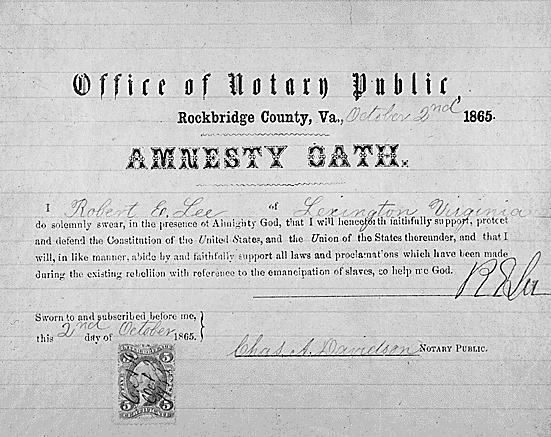
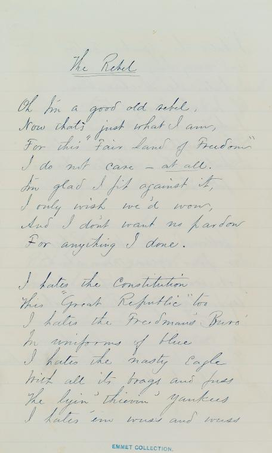

|
Although swearing loyalty to the Constitution and to the
United States had always been a part of government service,
the Civil War and Reconstruction era witnessed an increased
devotion to that practice as a way to determine the fidelity
of both citizens and officials. The need to draw a firm
line between traitor and patriot defined these actions, and
during this period loyalty oaths served as a federal job
requirement, a weapon of war, and an effective tool in
partisan politics.
In August 1861, Congress passed legislation that
prescribed a new oath for federal employees. By the middle
|

Gen. Robert E. Lee signed this loyalty oath shortly after the end of the
Civil War in 1865.
|
of 1862, those working in federal positions had taken two
different pledges swearing loyalty to the Union and its
efforts. As the desire to identify treason grew, pensioners
and postal contractors also found themselves required to
avow their fidelity. In order to submit a bid on any
federal contract in the summer of 1862, businessmen had to
affirm their support for the United States. Wisconsin
Congressman John Potter headed a committee that searched for
traitors in government offices, and much of the committee's
work focused on those who failed to take the prescribed
oath. This drive to confirm the patriotism of any person
connected to the government reached its peak in June 1862.
At that time, Congress debated the necessity of a loyalty
oath that would include Senators and would require them to
swear their allegiance for the past, present, and future.
Subsequently known as the "Ironclad Test Oath", this measure
failed to pass the Senate, but later became a fixture of
reconstruction.
The Northern military also played a significant role in
the demarcation of loyalty among citizens and prisoners.
Southern residents of Union occupied territories dealt with
restrictive conditions, but received a measure of freedom as
soon as they pledged their faithfulness to the cause of the
Union. However, the federal administration did not regulate
this system and as a result the impact and enforcement of
these oaths varied. The Northern military governments in
Missouri, Louisiana, and Tennessee in particular enraged
Confederate sympathizers, for in those areas men like Ben
Butler enforced the loyalty oaths with tremendous zeal.
Southern citizens received relative freedom with their
pledge, but Lincoln also felt strongly about the condition
of prisoners of war, and he favored oaths that testified to
the future fidelity of the individual, as opposed to a more
restrictive oath that encompassed the past. The President
believed that the willingness to state allegiance
definitively determined a man's loyalty. As a testament to
this idea, Lincoln issued an amnesty proclamation on
December 8, 1863, that became the standard prisoner's oath
for the remainder of the war. This oath required the future
support of the Union effort and emancipation, but also
protected the individual's property, with the exception of
slaves, from confiscation. Such relative leniency served as
a powerful temptation for Southern soldiers and prisoners in
the final years of the war.
The loyalty oath soon became an integral and
controversial piece of Reconstruction policy. For both
Lincoln and Andrew Johnson, the oath, while important, did
|

Some former Confederates had no interest in taking
a loyalty oath. Maj. Innes Randolph made something of a career
of unrepentant Southern poetry and verse; shown here are
his handwritten lyrics to "Oh, I'm a Good Ol' Rebel," which
makes clear that, "I ain't asked any pardon for anything
I done."
|
not need to be any more than a profession of future
fidelity. For the Radical Republicans seeking a strict
reconstruction, the oath needed to be true to the ironclad
test oath created in 1862. This struggle, especially
between Johnson and the Radicals, most seriously affected
the resumption of numerous federal activities in the South.
In requiring federal employees to attest to their past,
present, and future loyalty to the federal government, the
ironclad test oath made it extremely difficult to find
Southern citizens willing and able to work for the
government. Treasury Secretary Hugh McCulloch, in order to
fill numerous revenue positions in the South, found it
necessary to hire individuals even if they could not take
the oath. This action, though taken with the approval of
the President and the Cabinet, enraged the Radicals in
Congress, and set the stage for the battles over the test
oath in the years that followed.
As the Republicans in Congress worked to impose their
idea of Reconstruction on the President and the South, they
used the ironclad oath as a tool to keep Confederate
sympathizers out of Congress as well as administrative
posts. When Southerners demonstrated their intransigence by
electing men to Congress who could not and would not take
the oath, the Radicals rallied against them, and made sure
that the newly elected officers were not officially seated
when they arrived in the capitol. Although the Radicals
scaled back their opposition in 1870 as their political
strength waned, and the ironclad oath for Southerners was
repealed in 1871, members of Congress repeatedly defeated
measures to remove the test oath law. The loyalty tests
remained in force until May 13, 1884.
Source: Joan Waugh, ed., Facts on File Encyclopedia of American
History: Civil War and Reconstruction, 1856 to 1869 (New York: Facts on
File, 2003), 218-219.
|